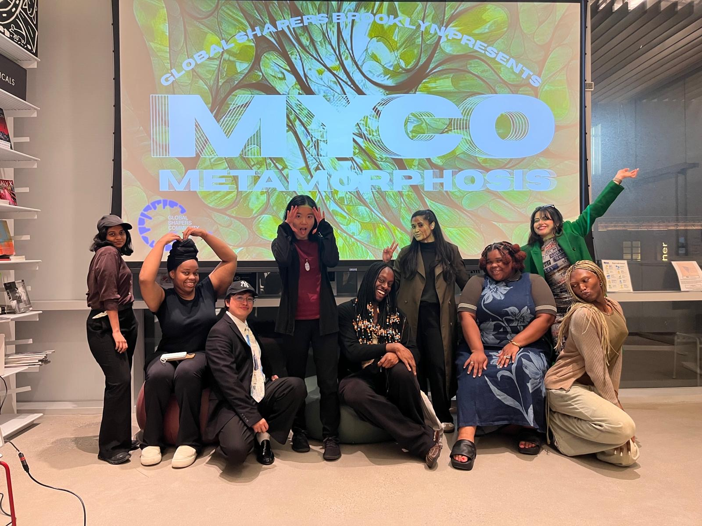

Get to know us.
We're a hub of the Global Shapers Community, a network of changemakers under 30 advancing local solutions to global challenges — right here in Brooklyn.
This year's curatorship
Our community
Global Shapers Brooklyn is our members — at retreats, socials, and everything in between.

What we stand for
-
❤
Community-centered service & self-love
Service for our neighbors is defined by mutual care, fulfillment, and alignment with a shared mosaic of values. Giving back is a reflection of personal well-being and collective healing — we care for our community because we care for ourselves.
-
🌍
Climate action & environmental justice
A collective interest in climate resilience unites us — addressing the disproportionate impacts of climate change on our community through community gardens, climate-focused education, and storytelling.
-
★
Leadership growth through impact
We are more than young professionals — we're leaders. Every Shaper leads or meaningfully contributes to at least one project a year, learning beyond their comfort zone to build new organizing, design, and operations skills.
-
◆
Accountability, capacity & scalable impact
It's a sacrifice and an honor to serve Brooklyn. Each member commits to monthly hours and annual impact and growth targets, emphasizing cross-hub scaling, partner-building, and measurable outcomes.
Get in touch
Need something specific — press, partnerships, or just curious about the hub? Reach out any time.